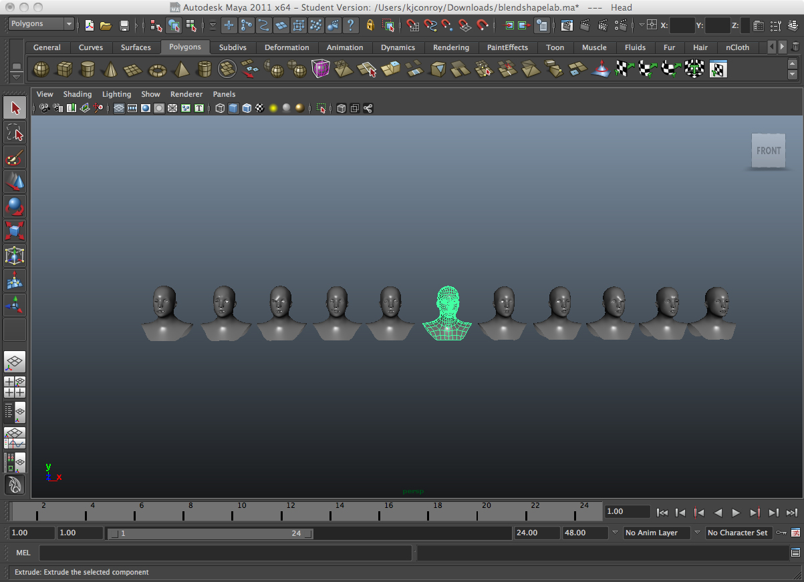
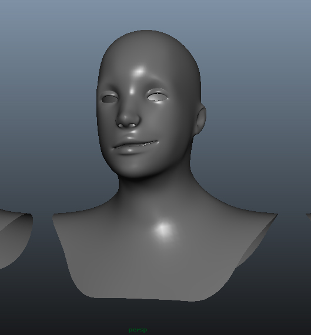
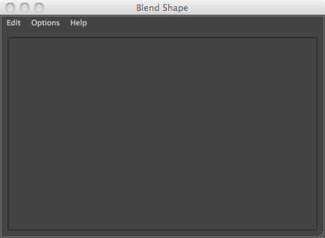
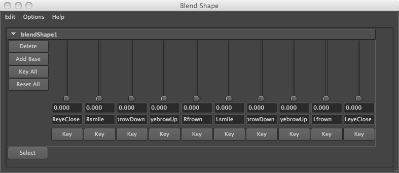
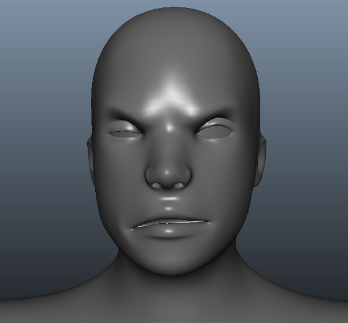

You are here: Home → Blend Shapes
Blend Shapes in Maya
Today we are going to be rigging a face. Before getring started, download the face model to the scenes directory in your current Maya project.
What the Heck are Blend Shapes?
Rigging a face can be difficult. Unlike legs, arms, and other body parts, joints do not map perfectly to the aspects of a face. Instead of joints, we use Maya blend shapes. Blend shapes take any number of different models and create an single model which can shift between any of the models in varying degrees.
For example, say we have two face models, one with an eyelid open and the other with an eyelid closed. A blend shape created with the two models will be able to open and close an eye. If you're confused, don't worry, blend shapes will make sense once you create your first one.
Creating a Blend Shape.
First, open up the faces.ma scene in Maya. The scene consists of nine models. The center model (selected below) is the neutral pose. Each one of the other model represents a specific facial expression on one side of the face.

The right side of the face smiling

To creat your blend shape, first select all the expression models (except the centeral, neutral expression). Make sure to select the neutral expression last. If this model isn't selected last, the blend shape won't work correctly.
With the models selected, make sure you are under animation tab. Select Create Deformers→ Blend Shape → Option box. The following window should pop up on your display. In advance tab, check front of chain as deformation order. Then click create.

Select Window → Animation Editors → Blend Shape. This window is the controller of the blend shape that you just created.

Center the screen on the middle face model (Select the model and press F). Play around with the newly-created sliders, sliding them up and down and back again. The face model should respond accordingly, closing its eyes, lowering its brow, and changing its mouth. Each slider controls the amount of blending between the base model and the targeted model. These sliders can be animated, a topic which will be covered later in the course.
Try to get your face model to match mine

After blend shape creation, hide all the models used to create your blend shape. Do not delete these models. After creating the blend shape, you may want to update one of these models later. If you delete the models, you will not be able to change your blend shape.